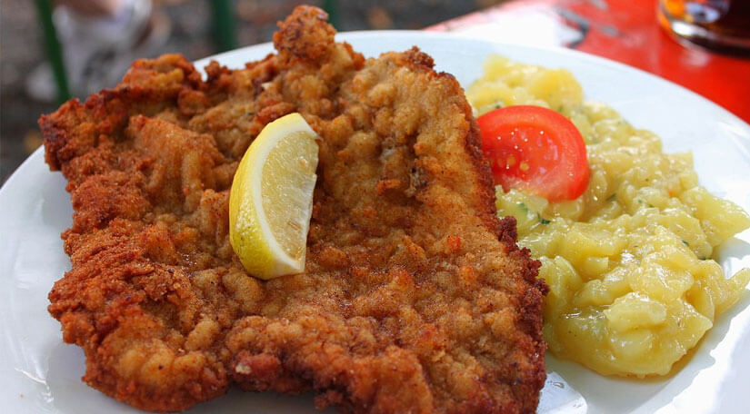
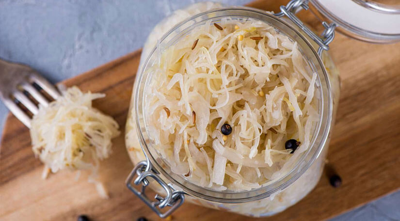
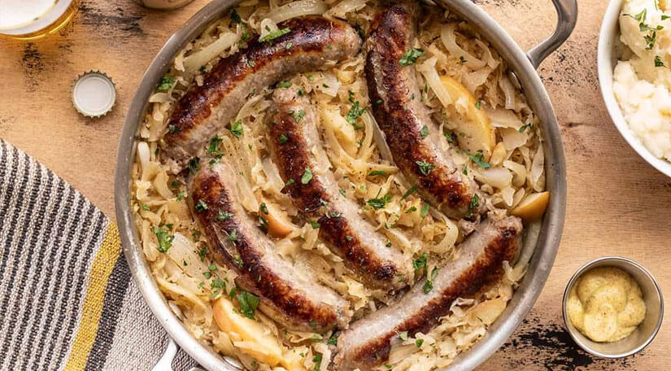

Schnitzel - Costelinha de carne empanada
Aprecie o crocante e saudável Schnitzel - um clássico prato alemão que irá deliciar o seu paladar a cada mordida. Este prato tem sido um alimento básico da culinária alemã por gerações, com suas finas fatias de carne cobertas por uma crosta crocante de pão ralado. Quer prefira carne de porco, vitela ou frango, o Schnitzel é obrigatório na Alemanha. O prato é normalmente servido com um acompanhamento de spaetzle fofo ou batatas fritas crocantes e deixa você se sentindo satisfeito. De exterior crocante e carne tenra, o schnitzel é um dos melhores e mais conhecidos alimentos da Alemanha e um verdadeiro representante da cozinha tradicional do país. Este prato não é um prato nacional oficial da Alemanha, mas devido à cobiça das pessoas, é conhecido como o prato patriótico da Alemanha.
Sauerkraut - Prato de repolho roxo fermentado
Prepare-se para fazer alarde e experimentar os sabores poderosos do Sauerkraut - um popular prato tradicional alemão feito de repolho fermentado. Este acompanhamento picante e crocante combina perfeitamente com pratos de carne saudáveis, como schnitzel e bratwurst. Se você é um fã de picles ou quer experimentar algo novo, o chucrute é um prato obrigatório que fará seu paladar cantar de alegria. Não é de admirar que o chucrute tenha se tornado um alimento básico da culinária alemã, popular entre os habitantes locais e visitantes.
Bratwurst - Lingüíça grelhada
Aprecie o sabor rico e defumado da Bratwurst, um popular e famoso prato alemão que resistiu ao teste do tempo. Feita com carne de qualidade e uma mistura de especiarias, esta deliciosa linguiça é uma prova obrigatória para quem explora as tradições culinárias do país. Esteja você passeando por uma feira de rua movimentada ou sentado em um aconchegante restaurante local, a Bratwurst certamente o conquistará com seu sabor forte e textura satisfatória. Este clássico prato alemão é tradicionalmente grelhado com perfeição e servido com uma variedade de saborosos acompanhamentos como chucrute, mostarda e pãezinhos. Bratwurst não é apenas uma guloseima deliciosa, mas também tem um profundo significado cultural para os alemães. Ela remonta à Idade Média, quando era uma importante fonte de alimentação para os agricultores e trabalhadores. Continua sendo um símbolo da culinária alemã e é celebrado como um prato nacional.